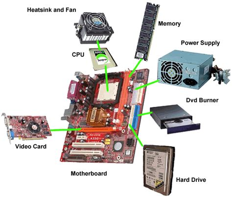
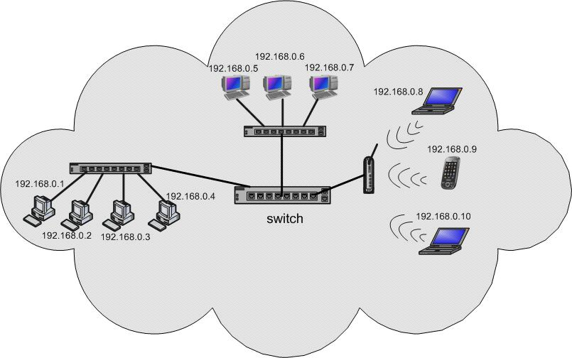
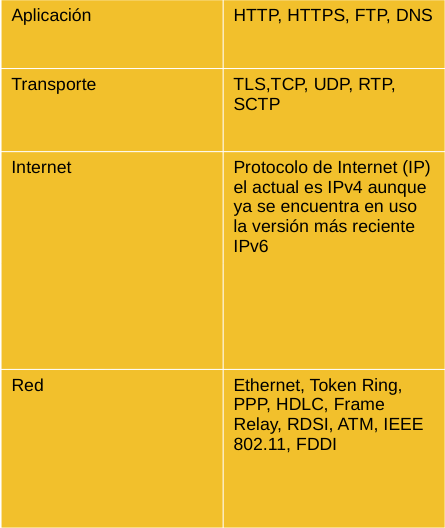
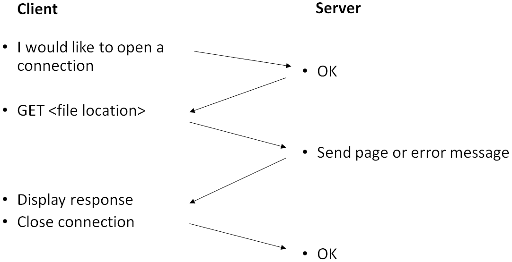
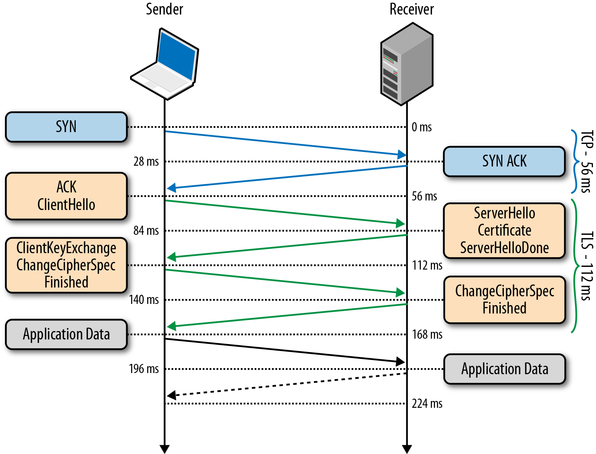

Taller de Programación Web - HTML, CSS, Javascript
por
Ivan Robles

Volver al Índice
Esta obra está bajo una Licencia Creative Commons Atribución-CompartirIgual 4.0 Internacional
Acerca de mí
- Ivan Robles.
- Tengo 23 años, vivo con mi familia en la zona Metropolitana de Guadalajara, México.
- Soy Tecnólogo Profesional en Sistemas Informáticos egresado de La Escuela Politécnica de Guadalajara (4 años).
- Estudio la Lic. En Ing. En Sistemas Informáticos en la Universidad Latinoamericana UTEL con un avance curricular del 80%.
- Hablo Inglés fluido cuya habilidad me ha ayudado a formar mi carrera en TI.
- Tengo casi 4 años de experiencia trabajando en empresas del área de TI, siendo un año y medio aplicando mis conocimientos en programación y capacitandome.
- He impartido un webinar y un curso de Linux desde cero hasta administrador en la transnacional donde trabajo.
- Administrador Junior en sistemas Linux y entusiasta del Software Open Source.
- Programador Junior en Python y en Front-end enfocado a webapps.
- Desarrollo actualmente una aplicación web llamada "Workshops" basada en en el Framework Django que sirve como una plataforma para compartir cursos de manera sencilla y directa tanto para administradores como para el usuario de la plataforma, él código se encuentra en Sourceforge y Github, está en continuo desarrollo y actualmente con un fork en Flask en proceso.
Internet se está convirtiendo en la plaza central de la aldea global del mañana.
-Anónimo
01 Fundamentos
Índice
- Bases
- Internet
- Páginas Web
1. BASES
Datos y Computadoras
1.1 Datos e Información
La definición de "Dato" la RAE es:
1. m. Información sobre algo concreto que permite su conocimiento exacto o sirve para deducir las consecuencias derivadas de un hecho.
De acuerdo a The Free Dictionary
inform. Representación convencional de un hecho o idea que puede ser tratada por un ordenador.
Ejemplos de datos con los que normalmente interactuamos:
- Nombres
- Números
- Letras
- Palabras en sí
Por ejemplo, las palabras representan objetos reales o abstractos, cada letra del alfabeto representa un sonido que hacemos para representar a su vez palabras las cuales forman frases, oraciones, órdenes o pensamientos y que otros puedan saberlos.
En pocas palabras, el lenguaje escrito y hablado nos sirve para comunicar nuestros pensamientos a otros
Pero aquí está un detalle importante: Al igual que decir nombres, números y datos así sin más es inútil, así como necesitamos articular las palabras en oraciones, los datos organizados se convierten en Información
En otras palabras, no nos enfocamos en los datos sino en la información que estos crean
Son el objetivo de estudio y propósito en la Informática y por tanto de la programación en general, es por eso que abordamos desde esta instancia.
Para comunicar la información a otros es necesaria la codificación:
Codificar es representar los elementos de un conjunto mediante los de otro, de forma tal que a cada elemento del primer conjunto le corresponda un elemento distinto del segundo.
- Fernando Berzal, Introducción a la Informática, 2004, pág. 4
Números, Alfabetos, imágenes, sonidos, gestos funcionan.
Para las Computadoras:
Todo se reduce a 2 posibles estados binarios: 0 y 1
Las medidas de "información" digital (o sea, las computadoras) son:
- Bit: 1 ó 0
- Byte: 8 Bits (normalmente)
Por definición son:
... es una máquina electrónica que permite procesar y acumular datos. El término proviene del latín computare ('calcular').
- Definición.de , Enlace: https://definicion.de/computadora/
Las partes importantes son:
Dato: Representación simbólica acerca de un hecho, suceso o entidad.
Información: Conjunto ordenado de datos que forman un mensaje. Algo importante. Con un propósito.
Informática: “Ciencia que estudia el tratamiento de la información por medio de máquinas automáticas.”
1.2 Internet
Porque las computadoras necesitan comunicarse también 😃
Internet
(De acuerdo a Wikipedia) “Es un conjunto descentralizado de redes de comunicaciones interconectadas, que utilizan la familia de protocolos TCP/IP”
Esquema ejemplo de Internet
Internet surgió por la nacesidad de poder transmitir y compartir información entre computadoras por lo que, internet no es más que un conjunto de protocolos para compartir información
El modelo de red más usado es el modelo de "cliente-servidor"
- El Servidor (computadoras especializadas en un Data Center para almacenar y proveer a través de internet) las páginas web y datos necesarios a los usuarios.
- El Cliente (computadora, laptop, tablet, smartphone que puede acceder al recurso) en el caso particular de las páginas web, debe tener un "user agent" que se traduce normalmente a un navegador web (Chrome, Firefoz, Safari, etc.) que pueda solicitar recursos por medio de los protocolos HTTP/HTTPS
Estos son los protocolos más usados en las capas correspondientes en la familia TCP/IP:
En particular vamos a ver el protocolo de aplicación HTTP y HTTPS.
De acuerdo a Mozilla Foundation:
HTTP, de sus siglas en inglés: "Hypertext Transfer Protocol", es el nombre de un protocolo el cual nos permite realizar una petición de datos y recursos, como pueden ser documentos HTML.
-Generalidades del protocolo HTTP: https://developer.mozilla.org/es/docs/Web/HTTP/Overview
Por otra parte, podemos considerar a HTTPS como una versión mejorada de HTTP, al implementar una capa de seguridad.
Básicamente funciona así:
En más detalle es así una conexión HTTP/HTTPS:
Principales Elementos Protocolo HTTP
URL (Uniform Resource Locator) Un URI (Uniform Resource Identifier) que además proporciona la información necesaria para localizar y acceder al recurso se denomina localizador uniforme de recurso (URL, Uniform Resource Locator).
Entre los elementos más importantes tenemos, del lado del Cliente 'Request Methods' y del lado del servidor 'Response Status Codes'
Página Web
Es un documento electrónico capaz de contener texto, contenido multimedia e hipervínculos que permiten acceder a otras, el mismo está en formato HTML auxiliado de CSS y Javascript para su funcionamiento y presentación. Con una extensión .html
Lenguaje de Marcado de Hipertexto: HTML (actualmente HTML5)
Lenguaje de Estilo en Cascada: CSS (actualmente CSS3)
Lenguaje de Programación: Javascript
Porqué conviene aprender desarrollo Web Front-End:
- Amplia Contratación
- Trabajo Remoto y Home Office
- Como emprendedor de una PyME, da presencia y seriedad a tu negocio con un sitio A TUS PROPIAS PREFERENCIAS Y NECESIDADES
- Ayuda en preparación Integral de un Desarrollador Fullstack
- Sueldos competitivos en todo México: desde 17k hasta >30k de acuerdo a Indeed, OCC y LinkedIn
- Integra habilidades tanto Lógicas como de Diseño de Interfaces
Herramientas y Recursos Necesarios para Empezar a Programar Páginas Web
Requisitos Mínimos:
- Navegador Web Moderno
- Editor de Texto (opcional)
- (Incluso se puede aprender/practicar a programar desde un Smartphone)
Competencias y Habilidades
- Conocimiento básico de cómo se usa una Computadora, Tableta o Teléfono Inteligente
- Conocimiento de las tecnologías HTML, CSS y Javascript
- Habilidades de comunicación buenas para la colaboración en equipos y comunicación constante con el cliente así con jefes y compañeros
- Conocimiento y/o Manejo de Librerías y Frameworks Javascript para desarrollo Front-End
Habilidades Deseables:
- Manejo de Sistemas de Versiones (como Git, Subversion, Mercurial, etc.)
- Manejo de ciertos IDEs (Integrated Development Environment) como Visual Studio
- Manejo de Plataformas Externas en el proceso de desarrollo (entornos de Pruebas, Chats [Teamcity, Slack], Github, AWS)
- Terminal de comandos (normalmente GNU/Linux casi exclusivamente)
- Node.js
- SEO: Google Analitics
- Nivel respetable de Inglés
Otros:
- IDE Online (Cloud9, Repl.it, Hackerrank)
- Ciertos CMS (que tienen sitios prefabricados): Wordpress, Joomla, Wix
- Manejo de contenido Multimedia (imágenes y video)
- Bases de Diseño Gráfico
Beneficios Psicológicos de la Programación de Software para las Personas:
- Mejora Capacidad de Atención y Concentración
- Más autonomía y mayor interés por la experimentación y el aprendizaje
- Mayor orden y capacidad de comprensión
- Mejor capacidad de cálculo y de lógica
Una habilidad super importante de principio a fin para toda tu carrera como Programador es...
Actitud de Aprendizaje Autodidacta
FIN
InicioÍndice